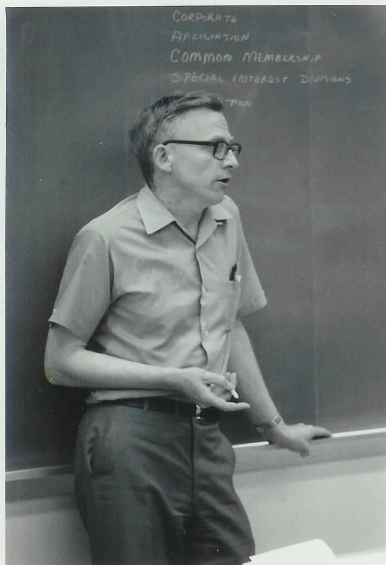

The Family Chronicle
No. 118 May 6, 2006
____________________________________________________________________
Donald Ernest Malcolm Glendenning

Don with pups
Don was born at Little Branch on September 8, 1929 and was baptized in the new St. Paul’s Presbyterian Church in Black River on opening day, July 20, 1930. Like the rest of the family, he attended the Little Branch School; he also graduated from the Miramichi Rural High School.
He completed a six-month teacher training program at Teachers’ College in Fredericton in June 1947 and his first teaching position was at Middle Kouchibouguac. Over the next few years he mixed teaching and study completing a PhD at Indiana University in 1964. He also taught at the Miramichi Rural High School and the New Brunswick Institute of Technology. In 1969, after a number of years with the Federal Government, he moved to Prince Edward Island to become the first President of Holland College. He also was active in a number of national professional organizations.
After retiring from Holland College in 1987, he set up his own company and engaged in educational consulting in Canada and abroad. His overseas contracts provided many travel opportunities especially to Asia and Africa.
Don married Carol Chesney from Peoria, Illinois and they have two children,, Brian and Janet; Brian married Marie Carota and they have two daughters, Lisa and Laura. Of the family, Carol, Brian, Janet and the grandchildren are all dual-citizens of Canada and the USA.
He was bitten early by the travel bug and, either for business or pleasure, visited most every corner of Canada, most US states, and 40 countries in all. As a family, they lived in Moncton, Bloomington (Indiana), Ottawa, Van-couver and now in Charlottetown. Don and Carol continue to travel and usually spend some time each winter in the southern USA. 
Don leading a workshop
Their most exotic trip was a safari in Tanzania, Africa; they also spent two weeks as guests of the Peoples’ Republic of China where Don delivered a lecture to Chinese College Directors.
After retirement, Don resumed his interest in genealogy and visited Callister Hall, Scotland, where his great grandfather was born in 1807. He publishes a Family Chronicle, an informal and occasional newsletter, which, thanks to Brian, is posted on the family website. The Newsletter carries both family and personal recollections of growing up in Black River.
Retirement activities in include genealogy, reading, volunteer work, travel, gardening, writing, letters to the editor – and working on his “farm”. Don was awarded the Order of Canada in 1986.
Childhood memories include picking wild blueberries, mayflowers, cherries, plums, strawberries, cranberries and mushrooms; hours spent with George Watling playing in and along the brook; our water diversion projects during spring run-off; the family going to church by horse and wagon; Sunday school under the huge tree in Uncle Jim’s back yard; dances in the Black River hall, at Mel Adams hall and elsewhere; Saturday nights cruising the streets in Chatham, and many more.

Don and Carol
The Chronicle is an occasional newsletter published by Don Glendenning and posted on the family website. It is intended to share information about my family, community and the times in which I grew up. While every effort is made to be accurate, errors are likely to occur. Comments, enquiries and information may be sent to 62 Queen Elizabeth Drive, Charlottetown, PEI, C1A 3A9. Tel:902 892 5859. Email: dglende@auracom.com Web: www.glendenning.net